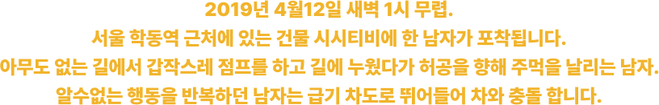
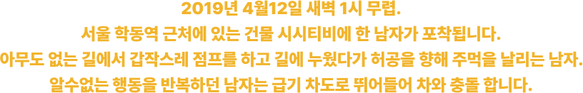
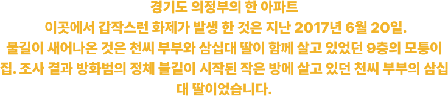
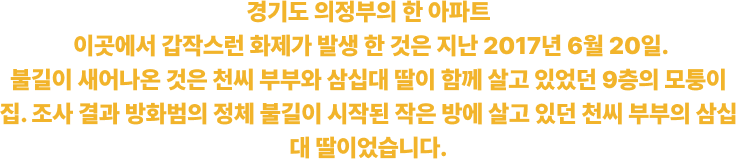

WARNING WARNING WARNING WARNING WARNING WARNING WARNING WARNING WARNING WARNING WARNING WARNING WARNING WARNING WARNING WARNING


이 중 “펜터민, 펜디메트라진, 디에틸프로피온, 마진돌, 로카세린” 성분은 의존성이나 내성이 발생할 수 있어 향정신성의약품으로 지정·관리되고 있습니다.


어차피 처방도 못 받을 거 같은데...
뭐가 문제인거야?

WARNING WARNING WARNING WARNING WARNING WARNING WARNING WARNING WARNING WARNING WARNING WARNING WARNING WARNING WARNING WARNING


 1.png)

 1.png)

 1.png)
 1.png)
 1.png)
쉽게 구할 수 있다고...?
너무 많이 먹지만 않으면 괜찮겠는데?

WARNING WARNING WARNING WARNING WARNING WARNING WARNING WARNING WARNING WARNING WARNING WARNING WARNING WARNING WARNING WARNING
식욕억제제를 복용하면 흥분하게 됩니다. 활력이 생긴다거나, '업'된다고 느낄 수 있는데, 이런 작용을 컨디션이 좋아진다고 생각하시는 경우가 많습니다. 펜터민은 기본적으로 4주 복용한 후에는 중단해야 합니다. 그런데 약을 지속적으로 먹다가 끊으면 어떻게 될까요? 약물로 인한 흥분 상태가 일순간에 사라지니까 갑자기 확 처집니다. 컨디션이 떨어지는 것 같고, 삶이 무기력해지고, 우울증이 발생합니다. 그러니까 약을 또 찾게 되는데 이게 바로 의존성입니다.
남용성도 심각합니다. 식욕이 억제되기 때문에 눈에 띄는 체중 감량이 있을 것입니다. 그래서 이 약을 먹지 않아야 될 사람들(고도비만이 아닌 정상체중, 저체중)이 먹는 상황이 발생합니다.
이렇게 의존하거나 남용하다보니 약물 자체의 부작용이 많이 생깁니다. 중추신경 흥분제의 가장 큰 문제는 심혈관계통 부작용의 가능성이 굉장히 높다는 것입니다. 심하면 고혈압이 발생하거나, 안압이 올라가서 녹내장이 생기거나, 비뇨기계가 안좋아지거나, 혈당 조절이 안 될 수 있습니다. 위장간계도 나빠집니다. 구토, 식욕부진, 메스꺼움, 복통, 심하면 장 운동 기능이 완전히 떨어질 수도 있습니다. 또 호르몬에 작용하다보니 세로토닌의 농도가 높아지면서 '세로토닌 증후군'이 발생할 수 있습니다. 굉장히 위험한 증상입니다. 섬망 증상이 생길 수 있고, 심하면 혼수상태까지 갈 수도 있습니다.
(섬망은 일시적으로 매우 갑작스럽게 나타나는 정신상태의 혼란으로 안절부절 못하고, 잠을 안자고, 소리를 지르고, 주사기를 빼내는 것과 같은 심한 과다행동이나 환각, 환청, 초조함, 떨림 등이 자주 나타나는 것을 말합니다.)

 



 
